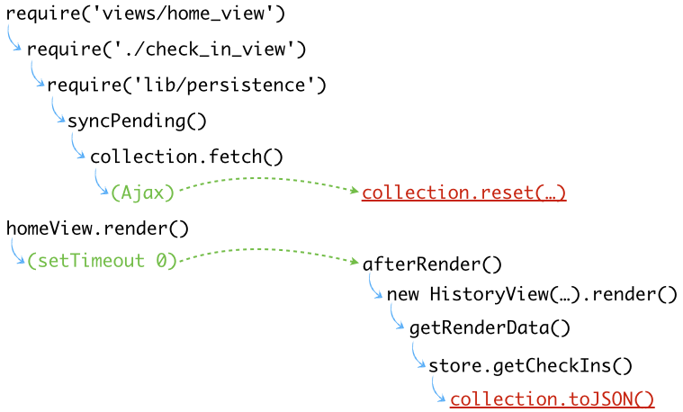

Étapes de dev
L’historique de check-ins
Garder la liste triée : l’ordre naturel
Détection online/offline, court-circuit et réconciliation
Stockage local
WebSockets et diffusion temps réel
Source final, bilan et Groc
L’historique
On décline une nouvelle vue imbriquée sur la droite, comme on l’avait fait pour la zone de check-in sur la gauche.
Souci potentiel de race condition asynchrone :

* création views/history_view.js. copié / collé depuis une autre vue comme home_view
* * require(view), exports et extend, template(history) et getRenderData
* éditer home_view en prenant modèle sur CheckInView (require + new HistoryView().render ) FIXME:list s'affiche. on peut fermer home_view
* correction du FIXME
* history_view : ajout de listTemplate:'templates/check_ins', le montrer
* édition de getRenderData, dont console de store.getCheckIns
* la vue de l'historique est la plus souvent vide. le console.log montre un tableau vide alors que require('lib/persistence').getCheckIns() montre qu'il y a bien des résultats
* demander comment résoudre. Proposer dans views/view.js setTimeout(this.afterRender.bind(this), 100); à la place du defer
La solution
On va découpler tout ça proprement avec Backbone.Mediator .
On va ainsi utiliser des événements applicatifs pour notifier du reset de la collection.
Qui veut écoute… dont la fenêtre d’historique. Si elle render avant la fin du fetch , elle pourra le refaire au bon moment.
collection.on('reset' , function() {
Backbone.Mediator.publish('checkins:reset');
});
subscriptions : {
'checkins:reset ': 'render'
},
* explication du pattern pub/sub, et du Hub : pas d'instance = un singleton donc tout le monde publie là dedans
* persistence.js : collection on reset => mediator publish checkins:reset + require Backbone
* history_view : subscriptions (à copier / coller…) checkins:reset : render
* la colonne est rendue 2 fois mais est constamment à jour
Réagir à l’ajout
Quand on ajoute, ce serait bien de le voir tout de suite à droite !
Même approche : événement applicatif d‘ajout.
collection.on('add' , function(model ) {
Backbone.Mediator.publish('checkins:new ', model.toJSON() );
});
subscriptions: {
'checkins:new ': 'render',
// …
},
* history_view : 'checkins:new':'render'
* persistence : collection on add, mediator public 'checkins:new'
* rappeler qu'ils peuvent supprimer l'historique à la main dans sources > localStorage + rm db.json
Ordre naturel
La collection, par défaut, liste les modèles par ordre d’ajout. Pas cohérent avec le tri serveur, qui a les plus récents d’abord.
Pour garantir l’ordre, il faut implémenter un ordre naturel , afin que la collection soit toujours bien ordonnée.
comparator : function(c1, c2 ) {
return +c2.get('key') - +c1.get('key');
}
Une fois ceci calé, on modifiera quand même notre réaction à checkins:new pour une UX plus remarquable.
* models/collection.js : ajout comparator
* faire remarquer que c'est correment trié mais ça va trop rapidement pour que l'utilisateur comprenne
* démo dans le navigateur de l'ajout de la classe new sur un li + montrer check_ins.jade et history.styl
* modifications pur UX dans history_view :
* * 'checkins:new':'render' devient insertCheckIn
* * création fonction insertCheckIn
* on peut fermer collection.js et history_view
Online/Offline
HTML5 prévoit deux parties, hélas peu cohérentes :
navigator.onLine (notez cette !@# de L majuscule)
Événements online et offline sur window
if ('onLine ' in navigator) {
exports.isOnline = function isOnline() { return navigator.onLine; };
$(window ).on('online offline ', checkStatus);
checkStatus();
}
function checkStatus() {
Backbone.Mediator.publish(exports.isOnline() ? 'connectivity:online' :
'connectivity:offline');
}
On s’inscrit aux événements applicatifs pour refléter ça sur le picto d’en-tête (HomeView, #onlineMarker)
* ouvrir lib/connectivity.js
* on garde la ligne exports.isOnline en backup
* exports.isOnline = return navigator.onLine;
* test : require('lib/connectivity').isOnline() depuis la console, en fermant le wifi / cable. Devtools / emulation / offline n'aide pas ici…
* création checkStatus pour publier des events connectivity:online / connectivity:offline dans le bus
* synchro du picto online
* * dans home_view.js, fonction syncMarker (récupération de l'élément DOM, dont bootstrap tooltip, show/hide en fonction de isOnline ou pas) + require connectivity
* * exécuter syncMarker dans afterRender()
* * l'état est correct au premier rendu de la page
* * ajout des subscriptions (attention à toutes les typos possibles …), l'état se met à jour lorsqu'on coupe le wifi
* on peut fermer home_view, connectivity
Court-circuits
On est hors-ligne ? On évite de se tirer dans le pied :
Inutile de recharger la géoloc / les POIs / de l’Ajax
initialize: function() {
// …
checkFetchable();
// …
Backbone.Mediator.subscribe('connectivity:online', checkFetchable);
Backbone.Mediator.subscribe('connectivity:offline', checkFetchable);
// …
function checkFetchable() {
that.set('fetchPlacesForbidden', !cnxSvc.isOnline());
}
}
if (!cnxSvc.isOnline()) {
return;
}
Disable du bouton fetch lorsqu'on est offline
* dans check_in_view rappeler ce qu'on avait fait pour le bouton submit, copier / coller le bindings
* changer pour 'header button' => fetchPlacesForbidden
* dans check_in_ux : fonction checkFetchable, require connectivity
* subscribe aux events connectivity:online / offline
* tester en montrant qu'à la déco le bouton est disabled
* déclencher un fetch lorsqu'on revient online : dans check_in_view : rajouter subscriptions 'connectivity:online': 'fetchPlaces'
* on peut fermer check_in_view et check_in_ux
* mute des requêtes dans :
* * persistence.js syncPending
* * models/check_in.js : sync
* test offline : history doit être vide, un checkin n'envoie pas de XHR
Pourquoi on a encore des POIs qui apparaissent ? parceque dans lib/places.js on sauve tout dans localStorage. Si on vide localStorage, il reste les données fake :)
Réconciliation
Une fois de retour online , il faut persister ce qui ne l’a pas été.
function accountForSync(model) {
pendings = _.without (pendings, model);
if (pendings.length) return;
collection.off('sync', accountForSync);
collection.fetch({ reset: true }) ;
}
function syncPending() {
if (!cnxSvc.isOnline()) return;
collection.off('sync', accountForSync);
pendings = collection.filter(function(c) { return c.isNew() ; });
if (pendings.length) {
collection.on('sync ', accountForSync);
_.invoke (pendings, 'save ');
} else
collection.fetch({ reset: true }) ;
}
démo du problème : un checkin offline n'est pas pris en compte au reload
* dans persistence.js
* * création fonction getPendingCheckIns (utilisation de filter + isNew) + export
* * édition fonction syncPending : .save sur tous les pending (+require underscore)
* * exécution syncPending quand connectivity:online
* * démo navigateur : la requête part lorsqu'on revient online
* cas tordus : comment savoir si la requête est réellement arrivée au serveur ?
* * écoute de l'event 'sync' de la collection dans syncPending
* * création de la fonction accountForSync
* * on dépile pendings, quand il n'y a plus rien à dépiler collection.off('sync') et on relance un fetch
Offline First
Cool, mais si on perd / rafraîchit la page avant de revenir online ?
Il nous faut un miroir local, persistant, de collection.
localStorage adapté, mais API trop basique ⇒ Lawnchair . En plus, on pourrait migrer sur IndexedDB sans toucher au code.
var localStore = new Lawnchair ({ name: 'checkins' }, function() {});
// …
collection.on('reset', function() {
localStore.nuke (function() { localStore.batch (collection.toJSON()); });
Backbone.Mediator.publish('checkins:reset');
});
collection.on('add', function(model) {
localStore.save (model.toJSON());
Backbone.Mediator.publish('checkins:new', model.toJSON());
});
* montrer localStorage dans le navigateur
* limites des différentes méthodes de stockage : http://www.html5rocks.com/en/tutorials/offline/quota-research/?redirect_from_locale=fr#toc-overview
* lawnchair
* * facilitera le meilleur des mondes : switch de localStorage à IndexedDB / WebSQL facile si besoin de plus d'espace
* * full async, adapters, plugins
* * Lawnchair range par attribut 'key' (la date, chez nous)
* persistence.js :
* * require de lawnchair + lawnchair-dom + instanciation
* * à chaque ajout dans la collection => save : collection.on('add')
* * à chaque resynchro de toute la collection => nuke, puis sauvegarde de toute la collection
* montrer dans le navigateur le contenu de localStorage
Relire le miroir
Avant même de charger par Ajax, on restaure depuis le miroir.
Ça permet une UI initiale utile, et de résister au rechargement ou à la fermeture de la page pendant l’offline .
function initialLoad() {
localStore.all (function(checkins) {
collection.reset (checkins);
syncPending();
});
}
// …
initialLoad(); // à la place de syncPending()
* persistence.js :
* * récupération depuis localStore des checkins, reset de la collection, avant exécution de syncPending
* * optionellemnt on peut le mettre dans une fonction initialLoad
* test 1 : passage offline, la collection s'affiche quand même
* test 2 : checkin pendant offline, passage online : le checkin est toujours présent. Re-reload : toujours là
Oops ! Doublons…
Il reste un cas où la collection bouge et le miroir local ne le voit pas : les événements sync (ex. fourniture de l'ID par le serveur en réponse à la création).
collection.on('sync', function(model) {
if (!(model instanceof CheckIn)) {
return;
}
localStore.save (model.toJSON());
});
* cas : un checkIn qui n'a pas été créé en local (la partie websocket arrive)
* écoute de collection.sync, check du type (car sync peut renvoyer la collection entière), sauvegarde en local
* CheckIn = require('models/check_in')
* test : couper le serveur, éditer db.json et rajouter à la main une entrée (changer id, key, placeId et usernName), rallumer : elle doit apparaître dans l'historique et dans localStorage
Web Sockets
D’autres gens check-in ? On aimerait le voir tout de suite…
Socket.IO fournit un magnifique enrobage, protocolaire et fonctionnel, au-dessus des Web Sockets et de leurs fallbacks .
var io = require('socket.io');
var store = require('lib/persistence');
// …
var socket = io.connect ();
socket.on('checkin', store.addCheckIn) ;
function addCheckIn(checkIn) {
if (collection.findWhere(_.pick(checkIn, 'key', 'userName'))) {
return;
}
checkIn.key = checkIn.key || Date.now();
collection['id' in checkIn ? 'add' : 'create' ](checkIn);
}
* c'est quoi websocket
* * protocole habituel: vérification de qui vient, création de rooms, s'entendre sur le format des messages échangés, déconnexion et reconnexion auto, ping régulier
* socket.io
* * implémentation de tout ça
* * client / serveur, fallbacks
* * http://socket.io/docs/
* * dialogue via système d'événement client / serveur
* montrer jst-server.coffee : require, attachement au serveur et le emit
* edit notifications.js
* * require socket.io et lib/persistence
* * on 'checkin', store.addCheckIn
* edit lib/persistence
* * blindage de addCheckIn pour éviter les erreurs de PUT
* test avec navigation privée (ou mobile) en local
* test de tout le monde sur le serveur projeté
Tester
Ce qui vaut pour le back, vaut pour le front
Tranquilité du développeur, qualité finale du produit
tests unitaires (fonction par fonction) VS tests d'intégration / fonctionnels (scénario complet)
TDD :
* bug = 1 test, la correction après
* dev : lire la spec, écrire le test, passer les tests
difficultés supposées : asynchronisme, navigateurs
pas de souci technique : c'est culturel. Mais le Web a maintenant besoin de qualité
Sinon, Jasmine, Mocha, Selenium, PhantomJS, casperJS
Mocha
Universel, issu de Node, particulièrement fort pour tester les aspects asynchrones
Système d’assertions libre (délégué)
Contextes imbriqués, before/after classiques
Facilités de ciblage temporaire (inclusif/exclusif)
Et plein d’autres trucs bien !
visionmedia.github.com/mocha
Dérouler l'ensemble de la page officielle.
* assertion au choix (shoot.js, expect.js (jasmine), chai)
* asynchrone : un callback avec .done() et il comprend
* pendings tests
* test duration : plus de 50 ms = warning de lenteur. plus de 100 = erreur
* fait pour Node, mais peut aussi marcher dans browser
* grosse liste de reporter (dont html, json, tap et surtout spec
* à la base fait pour la ligne de commande en Node, mais on va le faire marcher dans un navigateur
Mocha : BDD
describe ('The collection', function() {
before (function() { … }); // Avant l'ensemble du `describe`
beforeEach (function() { … }); // Avant chaque `it`
// Et aussi : `after`, `afterEach`
it ('should maintain the natural order', function() {
// Setup du test et assertions ici
});
});
$ mocha test/collection_spec.js
The collection
✓ should maintain the natural order
1 passing (27ms)
* montrer package.json
* * dans devDependancies les packages de test
* * le npm run testing (marche sur win ?)
* créer le rep test/ (RACINE)
* créer test/collection_spec.js
* copier / coller depuis la slide
* mettre use strict, config jsHint : globals describe,before …
* before : init de chai.should()
* rappeler qu'on veut tester l'ordre naturel de la collection : montrer models/collection.js et son comparator
* montrer npm test d'abord puis npm run testing
* beforeEach : require models/collection + instance coll en variable de la portée d'au dessus
* faire trouver l'algo du test
* après que le test passe, bien tester que le test fail en commentant comparator dans models/collection
* démos de pending : it('attend une implémentation');
* démo asynchrone + vitesse d'exécution moyenne, rapide, lente, timeout
it('doit aller vite', function (done) {
// timeout de ce test
this.timeout(1000);
// appel de done pour dire ok c'est fini
setTimeout(done, 50); // 20 = rapide, 50 = moyen, 80 = lent
});
* Couverture de test : démo possible avec un `npm run test-cov`
* * montrer test-reports/coverage.json et reports/lcov-report.index.html
* * provient de Istanbul, on peut montrer package.json => scripts => test-cov
Assertions riches (+ tonnes de plugins) & choix de style
Syntaxe Exemples
Assert
assert.typeOf(foo, 'string', 'foo is a string');
assert.equal(foo, 'bar', 'foo equal `bar`');
assert.lengthOf(foo, 3, 'foo`s value has a length of 3');
assert.lengthOf(beverages.tea, 3, 'beverages has 3 types of tea');
Expect
expect(foo).to.be.a('string');
expect(foo).to.equal('bar');
expect(foo).to.have.length(3);
expect(beverages).to.have.property('tea').with.length(3);
Should
foo.should.be.a('string');
foo.should.equal('bar');
foo.should.have.length(3);
beverages.should.have.property('tea').with.length(3);
sinon.js
De qui se moque-t-on ?
Attention : tuerie
Outil de spies/mocks/stubs hyper bien foutu
Mocke carrément Ajax, les APIs REST et le temps !
Indispensable pour découpler le code testé de ses dépendances externes, ce qui est une bonne pratique incontournable en unitaire/fonctionnel.
sinonjs.org
Recommandé pour toute situation de mocking, quel que soit le contexte/harnais. Éviter notamment la fonctionnalité similaire intégrée à Jasmine, qui est carrément pourrie (clock pas configurable par ex…, stub et spy).
Bien montrer, au travers de la page officielle, la hiérarchie spy -> stub -> mock
* spy : log tous les appels à une fonction (this, arguments, return, timestamps…). Ne touche pas à la fonctionnalité
* stub : remplace la méthode d'origine. Genre $.ajax
* Mock : composé de stubs, pour simuler une API complète
* fake timers : pour tester animations, timeouts, horloges… Remplace setTimeout, setInterval, clear, Date …
* fake XHR mais encore mieux le fake server* pour définir comment un serveur XHR doit répondre
Maître du temps
Sinon permet de prendre la main sur toute la gestion du temps*
var clock = sinon.useFakeTimers (); // Gel du temps
// …
clock.tick(1) ;
// …
clock.restore ();
clock = sinon.useFakeTimers(1412507461204 ); // Reset à un moment donné + gel
// …
clock.tick(1000);
// …
clock.restore();
*
new Date, Date.now(),
setTimeout, clearTimeout,
setInterval, clearInterval,
setImmediate, clearImmediate
But 1 : vérifier que nos clés sont bien uniques (à la milliseconde près en tout cas)
* remontrer qu'on avait créé lib/persistence.js/@addCheckIn . Ainsi que getCheckIns
* créer persistence\\_spec.js , copier depuis collection\\_spec . On peut supprimer beforeEach, on ne garde qu'un seul it()
* algo : **ajouter 2 checkins à 1 milliseconde d'intervalle et vérifier que les keys sont séparées d'une milliseconde**
* récupérer lib/persistence, faire un addCheckIn
* faire un getCheckIns, tester la taille de la collection et que la propriété key est apparue
* lancer ‘npm run test‘ : ça plante sur ‘Cannot read property 'ajax' of undefined‘ . On va simuler tout jQuery avec cheerio + rajouter Backbone Mediator
* avancer l'horloge d'une milliseconde
* faire un second addCheckIn, puis getCheckIns, test de la taille de la collection
* tester que le dernier checkIn ajouté (index 0) a sa key === la première key + 1
* ATTENTION BUG sinon et node: si après des consoles de Date.now la date n'avance pas, utiliser +new Date à la place
* tester que ça fail en remplaçant par exemple dans persistence/@addCheckIn Date.now() par un _.random(0, 10000) (ce qui évite que Kevin le stagiaire change cette ligne)
But 2 : Test d'interface : l'horloge qui se me à jour toute seule
* exécuter test-phantomjs/home_view_spec.html
* créer test-phantomjs/home_view_spec.js depuis collection_spec.js
* enlever require(chai) et chai.should() (déjà dans le html), et laisser 2 it()
* annonce qu'on veut rendre la vue home_view : @beforeEach require views/home_view et new HomeView.render()
* regarder les erreurs, implémenter le code du @before
* implémenter à la suite + le .restore dans afterEach :
* * stub de prompt (regarder sessionStorage)
* * stub de socket.io,
* * fakeServer.create()
* * clock useFakeTimer
* récupérer l'heure : Date.now() => 1421965831064 puis dans la console require('moment')(1421965831064).format('dddd D MMMM YYYY HH:mm:ss')
* au passage ouvrir le débat : est ce que je hardcode le jour ou est ce que j'utilise moment ? test = certitude, on hardcode
* test 1 (statique)
* test 2 (dynamique, avec le tick)
montrer que le navigateur c'est cool mais qu'on peut aussi en avoir un en CLI : mocha-phantomjs test-phantomjs/home_view_spec.html
Pas besoin du serveur
Tester le client en isolation, sans serveur !
Au top pour tester les cas d’erreur et isoler du serveur effectif.
xhr = sinon.fakeServer.create ();
// …
var req = _(xhr.requests ).findWhere({ method: 'POST' });
req.respond (201, { 'Content-Type': 'application/json' }, '{"id":42}');
// …
xhr.restore ();
but : tester le merge des données revenant du serveur avec le cache local
* créer test-phantomjs/persistence_spec.html en copiant/collant home_view_spec.html . Seule modification : inclusion de persistence_spec.js
* création de persistence_spec.js en copiant / collant test/persistence_spec.js.
* Supprimer require(chai) et require(sinon)
* supprimer le fake Backbone.$.ajax
* remplacer cheerio par jquery
* ajouter require de underscore
* supprimer le contenu du it() et du beforeEach(), changer le texte
* dans la console chrome, voir les erreurs de XHR cross origine
* dans beforeEach sinon.fakeServer.create , store = require(lib/persistence), localStorage.clear()
* afterEach : xhr.restore()
* test :
* * ajout à la collection (store.addCheckIn)
* * on vérifie que la requête à notre serveur virtuel est in-flight : check si la liste des pendings === 1
* * cohérence des données dans les pending et les requêtes in-flight (xhr.requests)
* * fake réponse avec code 201 et id 42
* * on vérifie que les pendings sont revenus à 0
Automatiser les navigateurs
Selenium
Karma
PhantomJS et SlimerJS
CasperJS , Poltergeist …
(et le harnais/serveur Spook )
Selenium :
* 20 ans, par Saucelabs
* TOUS les navigateurs
* simule TOUT : prompt, upload, screenshot, saisie progressive de texte, réglages utilisateur …
* langage de script propre
* mais Selenium RC = connecteurs pour le piloter
* un paquet de VMs
Karma :
* ex testacular
* concurrent direct Selenium
* moins de features
* pas IE !
Phantom / Slimer :
* webkit (équivalent chrome 22 + V8) ou gecko
* solide, rapide
* screenshot, navigation, exécution de JS dans la page
* manque certaines actions comme drag/drop
*
TrifleJS :
* IE headless (en pratique v8 + WebComponent de la CLR, mais plutôt bien équivalent, au final).
* IE récent donc, un jour
CasperJS :
* pilote Phantom, slimer et trifle
* API bcp + lisible
* pilotable depuis NodeJS avec SpookyJS
Casper 2
* sera un vrai module Node
* API async en promise
Poltergeist en Ruby
Faire une démo de CasperJS basée sur 3 exemples :
[Google Links](https://github.com/n1k0/casperjs/blob/master/samples/googlelinks.js),
[Screenshot](https://github.com/n1k0/casperjs/blob/master/samples/screenshot.js) (changer le sélecteur à `.js-stream-item`, si ça bloque) et
[Google Suggest](https://gist.github.com/n1k0/5477539) (s'il remarche…)
Indiquer que la combo Mocha + CasperJS, qui nécessite encore un peu de tripatouillages mais sera bientôt fluidifiée, constitue une solution de référence ces temps-ci pour des tests d'inté *headless* donc en CI…
Mocha-PhantomJS
Bridge prédéfini permettant d’exécuter mocha aussi bien dans un navigateur, interactivement, que dans un PhantomJS
<div id="mocha"></div>
<script src="../node_modules/mocha/mocha.js"></script>
<script>mocha.ui('bdd').reporter('html').slow(250); </script>
<script src="../public/app.js"></script>
<script src="./persistence_spec.js"></script>
<script>
if (window.mochaPhantomJS) { mochaPhantomJS.run(); }
else { mocha.run(); }
</script>
$ mocha-phantomjs test-phantomjs/persistence_spec.html
The persistence layer
✓ should properly merge sync-based data in the local cache
1 passing (31ms)
BUG : ça ne marche pas
mocha-phantomjs persistence_spec.html
Les VM en PaaS
Browserstack (et modern.ie )
SauceLabs *
Pour avoir rapidement des versions très spécifiques :
* SauceLabs et BrowserStack
* SauceLabs au niveau scripting a l'air plus robuste. forfait unique pour les usages manuel et auto, enregistrement vidéo de l'auto
* BrowserStack : 30 mn grauites pour de l'interactif
* mobiles dans simulateur
* Saucelabs : pilotable via tout langage